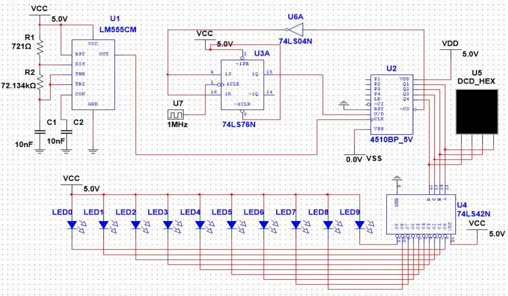

Components :
- 555 Timer (LM555CM)
- J-K Flip Flop (74LS76N)
- 4-BIT BCD COUNTER (4510BP_5V)
- Hex Inverter (74LS04N
- 4-LINE BCD TO 10-LINE DECODER (74L
- Red LED. Forward voltage (Vf) = 1.83V at 20m
- Digital Clock ( 1MHz Frequen
- Resistors (721ohm, 72.134K ohm
- Capacitor (10n
- Connecting Wire
System Circuit Diagram :
